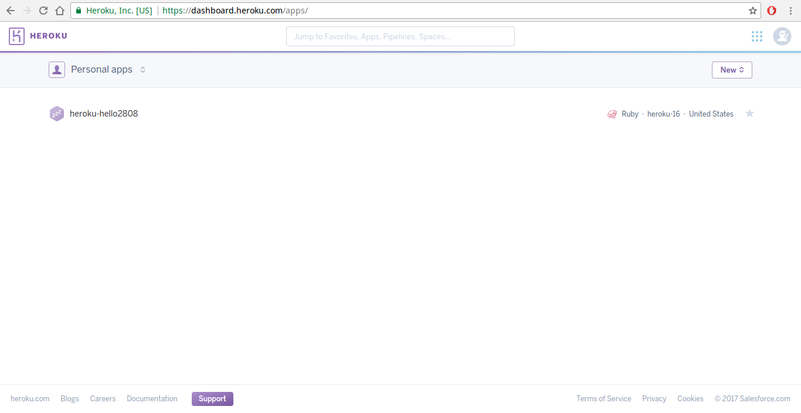
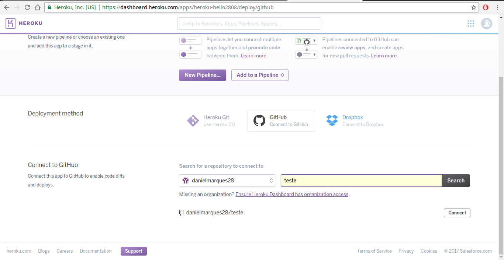

Tutorial
-
Se cadastre (ou faça login se já tiver uma conta) no site da ferramenta de deploy Heroku https://www.heroku.com/home.
-
Nas configurações da sua conta no Heroku (https://dashboard.heroku.com/account), vá até o topico “API Key”, clique no botão “Reveal” e copiei o campo de chave ao lado do botão.

-
Se cadastre (ou faça login se já tiver uma conta) no site da ferramenta de integração contínua CircleCI https://circleci.com/.
-
Nas configurações da sua conta (“Accounts Settings”) no CircleCI em Heroku API Key (https://circleci.com/account/heroku), cole a sua chave do Heroku e clique em “Save Heroku Key”.

-
Instale o aplicativo Heroku em seu Linux. Para Ubuntu e derivados basta adicionar o repo e instalar:
$ sudo apt-get install software-properties-common # debian only $ sudo add-apt-repository "deb https://cli-assets.heroku.com/branches/stable/apt ./" $ curl -L https://cli-assets.heroku.com/apt/release.key | sudo apt-key add - $ sudo apt-get update $ sudo apt-get install heroku -
Faça login no heroku do seu pc com o comando:
$ heroku login -
Criei um app no heroku:
$ heroku apps:create <nome_do_app_no_heroku_aqui> -
No site heroku vá até a dashboard de apps (https://dashboard.heroku.com/apps/), clique no app que foi criado no terminal. 
-
Clique na aba “Deploy”, selecione a ferramenta de versionamento como GitHub em “Deployment method”, selecione o repositório desejado em “App connected to GitHub”. 
-
Ative o deploy contínuo de uma determinada branch do seu repositorio em “Automatic deploys”, ative a checkbox “Wait for CI to pass before deploy” e clique no botão “Enable Automatic Deploys”.

-
Crie um arquivo na pasta do seu projeto chamado “circle.yml” com algum editor de texto, em seguida coloque dentro desse arquivo as configurações:
deployment: staging: branch: master heroku: appname: <nome_do_seu_app_no_heroku_aqui> -
Configure o arquivo “circle.yml” com os dados do seu projeto, adicione outras configurações e scripts se quiser.
-
No CircleCI na opção lateral “Projects” clique no botão “Add Project” (https://circleci.com/add-projects/gh/:org) e selecione seu repositório do GitHub que será feito a integração contínua e clique no botão ao lado “Build Project”.

-
Caso seu projeto use SSH, nas configurações do projeto vá no tópico “Permissions” e clique em “Checkout SSH Keys” e adicione a deploy key e a user key. Ainda no mesmo tópico clique em “SSH Permissions” e adicione a SSH key do seu repositório.
-
Pronto ! Ao commitar na branch escolhida para deploy haverá as mudanças automaticamente inseridas no Heroku.